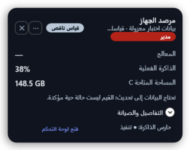
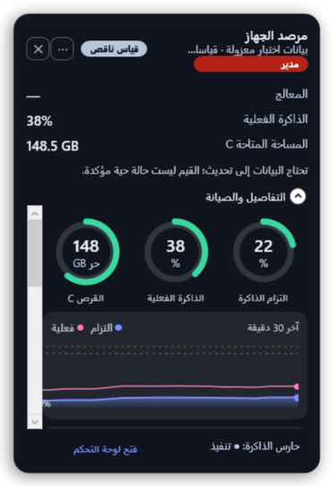

25 أكتوبر 2026 · آخر إعداد 2026-10-25 14:35 بتوقيت قطر
الإصلاحات نُفّذت في المصدر، والتطبيق عاد للعمل
سجل القرارات الأربعة والعشرين والتصميم المعتمد، مع فصل الاختبار المعزول عن التشغيل الفعلي والنقل المحمي.
النتيجة الحالية
الاختبارات الأخيرة بالمفسر الخاص: 12 مجموعة، صفر فشل وصفر تخطٍ. هذا لا يساوي اعتماد تفعيل محمي أو مطابقة WCAG كاملة.
أُنجزت تغييرات الكود والواجهة، وحُفظت أصول الملفات قبل التعديل. بقي التثبيت المحمي في مرحلة التجهيز؛ لم يُنفّذ Stage أو Apply، ولم تُحوّل مهام Windows إلى المسار الجديد. المكونات العاملة قد تحمل نسخًا مختلفة حتى إعادة تشغيل منسقة؛ لا أنسب كل تغيير مصدري إلى كل عملية حية.
التعطل الذي ظهر أثناء التعديل وإصلاحه
أدت نهايات أسطر CRLF في ملف الواجهة إلى اختلاف بصمة السكربت الخام عن النص الذي يطبع HTML نهايات أسطره إلى LF. بقيت سياسة CSP تحظر تشغيل JavaScript؛ لذلك ظهرت هيكلية الصفحة دون بيانات، رغم استجابة API وعمل الويدجت.
عولج السبب بتحويل الواجهة إلى LF بصورة ذرية، وتصحيح حساب البصمة في الخادم ليتبع تطبيع HTML. لم تُضَعف سياسة CSP ولم يُسمح بتنفيذ inline عشوائي. أضيف اختبار يقارن LF وCRLF وCR، واختبار يطابق ملف الواجهة الفعلي.
وجد خلل آخر في إعادة الفتح عبر helper: التذكرة كانت تُنشأ في ذاكرة عملية أخرى. أصبح helper يطلبها من الخادم العامل. أُصلح أيضًا استمرار عمل تحديد موضع النافذة واستعادتها إذا كانت مصغرة. اجتازت اختبارات الفتح والسياسة الخمسة.
المعاينة المعزولة الأولى لم تطبق CSP الحقيقية، ولذلك لم تكشف هذا العطل. صُحّحت أداة المعاينة لتستخدم تنفيذ CSP نفسه باستخراج آمن دون استيراد الخادم. تعذرت إعادة فحص المتصفح للمراجعة النهائية لأن إذن الوصول للمنفذين المحليين رُفض؛ لم تُجرَ محاولة لتجاوز الرفض. تأكيد عودة التطبيق الحي هنا من المالك، لا من لقطة آلية نهائية.
سجل الإصلاحات المعتمدة
| المرجع | المشكلة | ما نُفّذ وحد الدليل |
|---|---|---|
DB01 | تقليص التاريخ قد يمحو كل عينات الفترة القديمة | اختيار عينة حقيقية تمثل كل فترة خمس دقائق، مع حفظ قمة الضغط؛ اختبارات عينات غير محاذية وNULL وإعادة التشغيل. |
DB02 | Agent لا يهيئ قاعدة فارغة بالترتيب الصحيح | db.bootstrap موحّد، وترتيب المخطط والترحيلات مستقل عن بدء الخادم أو Agent أولًا. |
BE01 | كتابة JSON غير ذرية وفقد تعديل متزامن ممكن | معاملات JSON بقفل بين العمليات وحفظ ذري وfsync وحفظ صلاحيات Windows؛ اختبار أربع عمليات و80 تحديثًا. |
OP01 | استثناء قاعدة البيانات قد يوقف المهمة حتى إعادة التشغيل | تحرير حالة المهمة في finally، وفصل فشل التسجيل عن حجز المهمة؛ اختبار حقن فشل DB. |
FE01 | عناصر WPF تفاعلية مبنية على أحداث الفأرة | عناصر WPF Button وToggleButton وأسماء أتمتة وتركيز وقوالب مرئية؛ اختبارات AutomationPeer معزولة. |
RT01 | SQLite المكتشفة ضمن نطاق خلل WAL-reset المعروف | Python 3.14.9 وSQLite 3.54.1 خاصتان بالتطبيق، مع بصمات وتحقق توقيع وعزل البحث. اجتازتا الاختبارات؛ لم يجر تثبيت عالمي أو نقل للمهام. |
BE02 | طلب بدء التشغيل قد يرسل استجابتين | استجابة واحدة لتغيير بدء التشغيل مع اختبارات نجاح ورفض دون تعديل عناصر Windows. |
BE03 | seen_mb لا يشترط عددًا منتهيًا | رفض JSON غير القياسي والأعداد غير المنتهية والحدود غير الصالحة قبل المعاينة والتنفيذ. |
BE04 | حجم طلب غير محدود ومعالجة أخطاء المدخلات عامة | حد جسم الطلب 64KiB، ومهلة اتصال 15 ثانية وحد 24 عاملًا؛ أخطاء مدخلات واضحة دون كشف تفاصيل داخلية. |
BE05 | جلسة مشتركة ثابتة بلا انتهاء خادمي مستقل | جلسات مستقلة عشوائية، وانتهاء افتراضي 12 ساعة، وإلغاء منفرد؛ رمز الويدجت مستقل. |
FS01 | نقل الملف وسجله ليسا عملية قابلة للتعافي | سجل نية وUUID وحالات قابلة للتسوية عند انقطاع النقل؛ لا ادعاء معاملة واحدة بين قاعدة البيانات ونظام الملفات. |
FS02 | الاستعادة وانتهاء الحجر قد يتسابقان | حجز حالة ذري وقفل Windows بين العمليات؛ استعادة لا تستبدل ملفًا موجودًا، ودعم held القديمة. |
OP02 | timeout_s يرصد البطء ولا يوقف المهمة | مهل فعلية للعمليات التي تدعمها ومهل تعاونية ورصد للتعليق؛ لا قتل قسري لخيط Python ولا إعادة مهمة ما زالت حية. |
OP03 | قفل Collector يفصل الفحص عن الإنشاء | قفل Collector مرتبط بعمر العملية، لا ملف قفل بمهلة يمكن أن تتجاوز مالكًا حيًا. |
BK01 | فشل الوجهة الخارجية لا يملك إعادة محاولة مستقلة | إعادة محاولة مستقلة للوجهة الخارجية، ونسخ مجزأ مع مقارنة بصمة قبل اعتماد الملف. |
FE02 | إعادة بناء DOM أثناء تحديث CPU وGPU | تحديث DOM مستقر في صفحات الأداء مع إبقاء العناصر التفاعلية؛ لا شهادة تحقق شامل للتركيز في كل أوضاع المتصفح. |
FE03 | fetch بلا مهلة أو إلغاء، ومؤقتات قابلة للتراكب | مهلة وإلغاء وطلب GET جارٍ واحد ومنع نتائج المدى القديم؛ لا إعادة عمياء لأوامر مؤثرة. |
FE04 | بعض إخفاقات الأوامر تخفى وتستمر حالة التقدم | حالات ورسائل فشل ظاهرة، ومحاولة يدوية بدل الإيحاء ببدء عملية رفضها الخادم. |
FE05 | النافذة الضيقة تخفي وظائف وبعض دلالات التبويب لا تتغير | إبقاء الوظائف متاحة مع إعادة التدفق والتمرير، وتصحيح اتجاه تنقل التبويبات وربط اسم الحوار ووصفه. |
QA01 | النجاح قد يشمل مكونات متخطاة | فصل الفشل والتخطي والنجاح، وفشل غياب السياسة أو المحرك المطلوب. بقي تناقض وصف قاعدة خارجية موضح أدناه. |
QA02 | اختبار الاستعادة لا يثبت استعادة الخدمة | استعادة قاعدة إلى نسخة معزولة مع التهيئة وأربع قراءات خدمة، وقياس زمن التمرين وعمر العينة؛ لا تعافٍ كامل لـWindows. |
DATA01 | القياس المفقود قد يحصل على درجة كاملة | مصادر مفقودة أو قديمة لا تمنح نقاط سلامة؛ درجة جزئية وتغطية وحداثة واضحة، وتاريخ جديد للدرجات المكتملة فقط. |
MA01 | ترابط كبير وتوثيق وإصدارات مخطط غير موحدة | مصدر إصدار مخطط فعلي، وتصحيح توثيق التشغيل، وفصل الحفظ الذري والحجر والدرجة والمحمّل إلى وحدات محددة. |
SEC01 | الوضع المحمي يحتاج إثباتًا على الجهاز | إغلاق الرجوع الصامت، وتقييد تنفيذ الكانس المرتفع بحزمة محمية؛ خطة ترحيل تحمي المفسر والكود والبيانات. التثبيت المحمي غير مفعّل. |
الواجهة والهوية والويدجت
- الحفاظ على الاسم والشعار، وتوحيد لغة الألوان والمظهرين وكثافة عرض متوازنة.
- تنقل جانبي مجموع، ونظرة عامة مختصرة للمعالج والذاكرة والمساحة والتنبيهات والصيانة، مع فتح التفاصيل.
- أوصاف للصفحات وحداثة منفصلة عن زمن استلام الاستجابة؛ لا يُسمّى القياس المفقود أو القديم سليمًا.
- ويدجت مختصر قابل للتوسيع، وحفظ الموضع والمظهر وخيار topmost، مع احترام التفضيلات السابقة.
- تنبيهات مهمة داخل التطبيق والويدجت، وإشعار Windows عبر أيقونة شريط النظام للحالة المهمة الجديدة فقط، مع منع تكرار وكتم محفوظ. قد تمنع إعدادات Windows أو عدم الإزعاج ظهور الإشعار؛ اختُبر التفويض بكائن بديل دون إرسال إشعار فعلي.
صور الويب الثماني السابقة أثبتت المظهرين عند 1366 و480 بكسل دون تجاوز أفقي للصفحة أو أخطاء مسجلة في المتصفح، لكنها تسبق آخر تعديلات الحداثة وإصلاح CSP. صور WPF توليد خارج الشاشة من الشجرة الفعلية، وليست صور سطح مكتب. جرى فحص نسخة موسعة بارتفاع 543 ضمن 600 DIP مع تمرير فعلي وبقاء التذييل ظاهرًا.
لا يوجد تحقق حي شامل من تعدد الشاشات وDPI وtray وtopmost أو قارئ شاشة. لم تُمنح شهادة امتثال إتاحة.
الويدجت من المصدر الفعلي
توليد WPF خارج الشاشة ببيانات لقطة اختبار؛ ليس تصويرًا لسطح المكتب. تظهر البيانات القديمة بوصفها غير مؤكدة بدل إظهار المعالج كقياس حي.


التحقق والحدود
- 12 مجموعة معزولة بالمفسر Python 3.14.9 ومكتبة SQLite 3.54.1؛ تشمل الخلفية والتزامن والجدولة والحجر والجلسات والواجهة وCSP وعقود التثبيت.
- تمرين الاستعادة الأخير: integrity=ok، مخطط 3، وأربع قراءات خدمة. زمن يقارب 0.42 ثانية للتمرين المعزول فقط؛ عمر العينة في النسخة يقارب 18 ساعة ويتغير بوقت الاختبار.
- المثبّت: تحليل PowerShell ناجح، وخطة قراءة فقط لجرد 93 ملفًا، واختبارات نسخ قاعدة معزولة وترحيل مسارات الحجر وهويات الملفات وعقود XML دون لمس Task Scheduler.
- فحص الصياغة والربط لم يجتز كاملًا: قاعدة delivery-optimization الخارجية مفعلة بينما يبدأ وصفها بكلمة DISABLED. لم أغير تفعيلها أو وصفها لأن الحالة المقصودة لم تُحسم؛ هذا إخفاق معلن مستقل عن نجاح مجموعات الانحدار المعزولة.
- المهل تعاونية حيث لا يوفر نظام التشغيل إلغاء آمنًا، والحجر ينسق العمليات المتعاونة؛ لا ادعاء منع كل سباق عدائي من مسؤول محلي.
- لم يُنفذ تنظيف فعلي أو تبديل بدء تشغيل بغرض الاختبار. المهام التلقائية المعتادة بقيت تعمل وقد تقرأ المصدر المعدل من تلقاء نفسها.
حكم QA للمصدر والمعاينة: CONDITIONAL من azkia-qa-gate، مرتبط ببصمة المصدر 938831165a20d08fca5aa3e8aaa1983c2cc23288f8eb4b329035e58df0ea3d8a. لا يوجد PASS لتفعيل محمي، ولا قياس line coverage يثبت نسبة تغطية شاملة.
ما بقي قبل النقل المحمي
- تجهيز snapshot محمي فعلي والتحقق من ACL للمفسر والكود والأصول والبيانات والرمز وسلسلة المجلدات؛ الخطة وحدها ليست إثبات تنفيذ.
- أخذ لقطة نهائية بعد إيقاف منسق، وتدوير رمز النسخة المحمية دون طباعة، وتحويل اختصار بدء التشغيل القديم بعد مراجعته؛ تبقى بيانات المصدر محفوظة.
- تشغيل الجمع داخل Agent المحمي، وإبقاء Collector المجدول القديم معطلًا دون رفع صلاحياته؛ تشغيل Agent وLaunch يكون قرار تفعيل مستقلًا.
- اختبار صحة وقراءات من الحزمة المحمية نفسها، ومراجعة أمن للمسارات المرتفعة الخارجية. يرفض الكانس المرتفع نسخة مجلد المستخدم ما لم تتوافر حزمة محمية مراجعة.
- معالجة قرار قاعدة التنظيف المتناقضة، واستكمال أي أدلة UI مطلوبة قبل ترقية حكم QA.
لم تُحذف النسخة الأصلية أو بياناتها أو نسخها الاحتياطية. التراجع عن الكود لا يعني استبدال البيانات الأحدث بنسخة أقدم.
ملفات المراجعة والتشغيل
- دليل التشغيل والتحقق والتراجع
- حكم QA وحدود الاعتماد
- بصمات المصدر والمكتبات وحالة التحقق
- التقرير الموحد للاختبارات المعزولة
- نتيجة الفحص الثابت، مع الإخفاق الخارجي المعلن
- خطة التثبيت المحمي للقراءة فقط
- المثبّت للمراجعة؛ الوضع الافتراضي Plan
- أصول الملفات قبل الإصلاح
المصادر الخارجية: إصدار Python الرسمي وحزمة SQLite الرسمية. لم يُنشر شيء على الإنترنت.